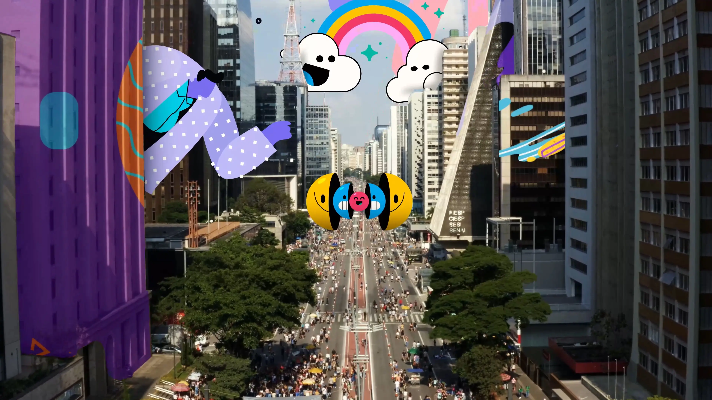
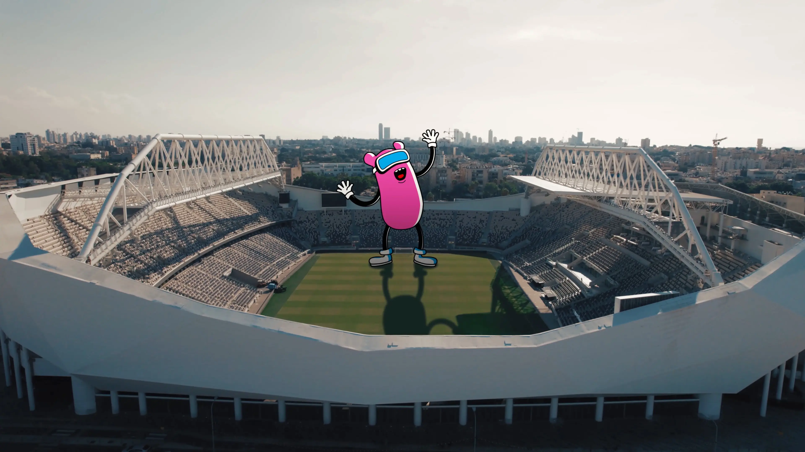
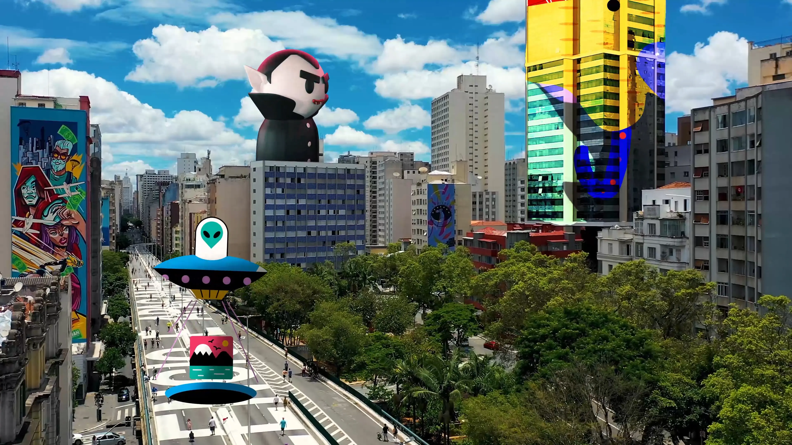

Project Overview
Este projeto explora a fusão entre o real e o imaginário ao misturar cenas da cidade de São Paulo com elementos animados. A proposta foi transformar a paisagem urbana em um espaço lúdico, onde personagens e animações interagem com o cotidiano da metrópole.
A ideia nasceu da vontade de enxergar São Paulo sob uma nova ótica, mais leve, criativa e divertida, trazendo à tona o contraste entre o concreto e o fantástico.
O resultado é um experimento visual no estilo hybrid animation, que combina filmagens com animações 2D, inspirando-se em referências como O Incrível Mundo de Gumball e outros universos que misturam o digital ao real.
This project explores the fusion between the real and the imaginary by blending scenes from the city of São Paulo with animated elements. The goal was to transform the urban landscape into a playful space, where characters and animations interact with the everyday life of the metropolis.
The idea was born from a desire to see São Paulo through a new lens — lighter, more creative, and fun — revealing the contrast between the concrete and the fantastic.
The result is a visual experiment in hybrid animation, combining live-action footage with 2D animation, inspired by references such as The Amazing World of Gumball and other universes that merge the digital with the real.
The Idea
Para dar vida a essa ideia, combinei algumas filmagens feitas em diferentes pontos de São Paulo com elementos animados que ajudaram a construir a narrativa e a atmosfera. Alguns assets visuais foram adaptados e integrados para enriquecer a composição, garantindo uma fusão harmoniosa entre o real e o animado.
O processo envolveu um trabalho cuidadoso de composição, ajustes de cor e tempo de animação para que as interações parecessem naturais, como se a própria cidade fizesse parte da história.
To bring this idea to life, I combined some footages captured in different spots of São Paulo with animated elements that helped build the narrative and atmosphere. Some visual assets were adapted and integrated to enrich the composition, ensuring a seamless blend between the real and the animated worlds.
The process involved careful compositing, color adjustments, and animation timing to make the interactions feel natural, as if the city itself became part of the story.


